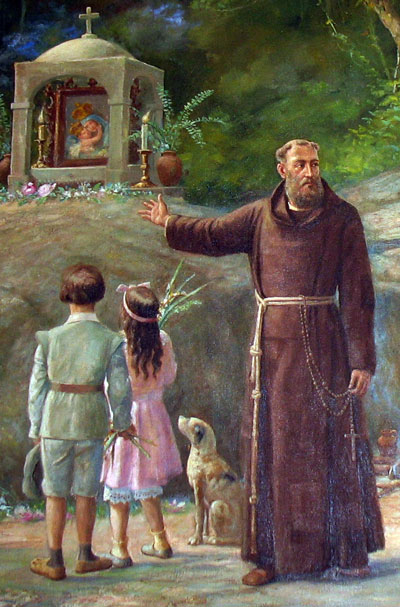

Frei Pedro Palácios: O Eremita Fundador e a Gênese da Devoção
Frei Pedro Palácios, um leigo franciscano originário de Medina do Rio Seco, na Espanha, é uma figura central na história do Convento da Penha e da devoção a Nossa Senhora da Penha no Espírito Santo. Ele chegou à Capitania do Espírito Santo em 1558. Antes de sua vinda para o Brasil, Palácios serviu como enfermeiro no Real Hospital de Lisboa, o que demonstra sua dedicação ao serviço e cuidado com o próximo.
Acredita-se que a vinda de Frei Pedro Palácios ao Brasil foi motivada por uma visão mística. Segundo a obra "As Maravilhas da Penha" (1888), ele teve um sonho na Europa onde soube de um lugar belíssimo na capitania do Espírito Santo, no cume de um monte marcado por duas palmeiras, que seria ideal para a construção de um Santuário a Nossa Senhora. Ao chegar à Vila do Espírito Santo e observar o desregramento dos colonos, ele compreendeu o propósito de sua missão. Essa narrativa sublinha como uma profunda fé e a visão mística de um único indivíduo podem ser a força motriz para a criação de uma instituição religiosa duradoura e uma tradição cultural de séculos. A determinação de Palácios em construir um santuário para Nossa Senhora, baseada em um sonho e sua vida de eremita e evangelizador, foi o catalisador direto para a fundação do Convento e o início da Festa. Isso ilustra o poder transformador da devoção pessoal na formação de patrimônios coletivos.
Palácios iniciou sua vida no Espírito Santo como eremita. Ele trouxe consigo um quadro de Nossa Senhora das Alegrias e se abrigou em uma caverna aos pés do morro, junto à praia, vivendo com um gato, um cão e um escravo idoso chamado Melchior de Azeredo, que foi seu companheiro até a morte. Posteriormente, construiu uma cabana no campinho, ao pé do penhasco, onde planejava edificar uma ermida para Nossa Senhora. Ele é considerado o primeiro eremita do Brasil e o primeiro franciscano a se estabelecer ali, vivendo de esmolas, rezando e ensinando a doutrina cristã.
A construção das capelas e da ermida foi um esforço colaborativo. Em 1562, Frei Pedro Palácios construiu a Capela dedicada a São Francisco. Quatro anos depois, em 1566, ele iniciou a construção da ermida de Nossa Senhora da Penha do Espírito Santo, com a ajuda de moradores, escravos e índios, que já eram devotos de Nossa Senhora. Essa colaboração revela um processo inicial de evangelização que não se deu por imposição, mas por cooperação. O fato de diferentes grupos étnicos e sociais terem contribuído para a construção de um espaço sagrado indica uma forma de integração cultural e religiosa na formação da sociedade capixaba colonial, onde diversas etnias contribuíram para um projeto comum de fé.
Em 1568, Palácios mandou vir de Portugal uma imagem de Nossa Senhora, que Maria Stella de Novaes descreve como "de roca" (cabeça, braços e Menino Jesus de Portugal, com o corpo talhado em madeira pelo próprio Pedro Palácios). Em 1570, ele edificou uma capela no cume da rocha e entronizou ali uma imagem de Nossa Senhora da Penha, também trazida de Portugal, celebrando este evento com uma festa.
Frei Pedro Palácios faleceu em 2 de maio de 1570, apenas dois dias após a primeira Festa de Nossa Senhora da Penha. Ele foi encontrado morto, ajoelhado e rezando, encostado ao altar na capelinha de São Francisco, e foi sepultado na ermida de Nossa Senhora da Penha. Seus restos mortais foram posteriormente transferidos para o Convento de São Francisco de Vitória em 1609.
A importância de Frei Pedro Palácios para o Convento e a Festa da Penha é inegável. Ele é reconhecido como o fundador do Convento de Nossa Senhora da Penha, cuja história remonta a 1558. Seu sonho de um santuário na montanha foi realizado, e a devoção mariana no Convento da Penha tornou-se a mais antiga do Brasil, logo após a de Nossa Senhora da Graça, em Salvador. Palácios foi o responsável por introduzir e consolidar a devoção a Nossa Senhora da Penha no Espírito Santo, com a ermida sendo um "grande refrigério e devoção dos navegantes" já em 1572, conforme carta de Anchieta. A primeira celebração da Festa de Nossa Senhora da Penha ocorreu em 30 de abril de 1570, uma segunda-feira de Páscoa, por sua iniciativa, e a festa continua a ser realizada anualmente, revelando a crescente fé e devoção do povo capixaba.
Sua vida de humildade, dedicação à evangelização e perseverança na construção do santuário o tornou um "santo ermitão" para a população. O Convento, também chamado de Santuário do Perdão e da Graça, é um legado direto de sua visão e esforço, servindo como um local de encontro espiritual para muitos. A veneração popular de Frei Pedro Palácios como um "santo ermitão," evidenciada pela romaria espontânea após sua morte e pelo início do processo de canonização em 1616 , demonstra que sua figura transcendeu a mera historicidade. As lendas associadas à sua morte, como os sinos tocando sozinhos e o túmulo se abrindo , solidificaram seu status de figura milagrosa e inspiradora. Esse mito popular contribuiu significativamente para a rápida e duradoura consolidação da devoção a Nossa Senhora da Penha e da própria Festa, mostrando como a fé popular pode criar e sustentar narrativas que impulsionam a tradição.